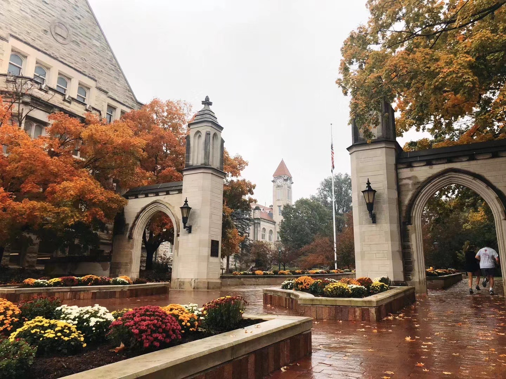
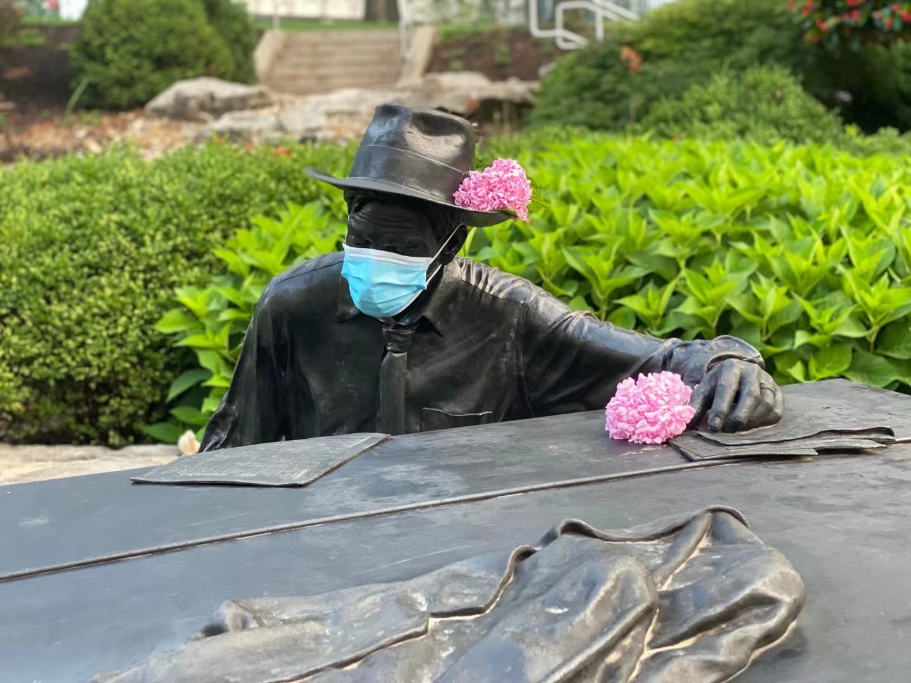
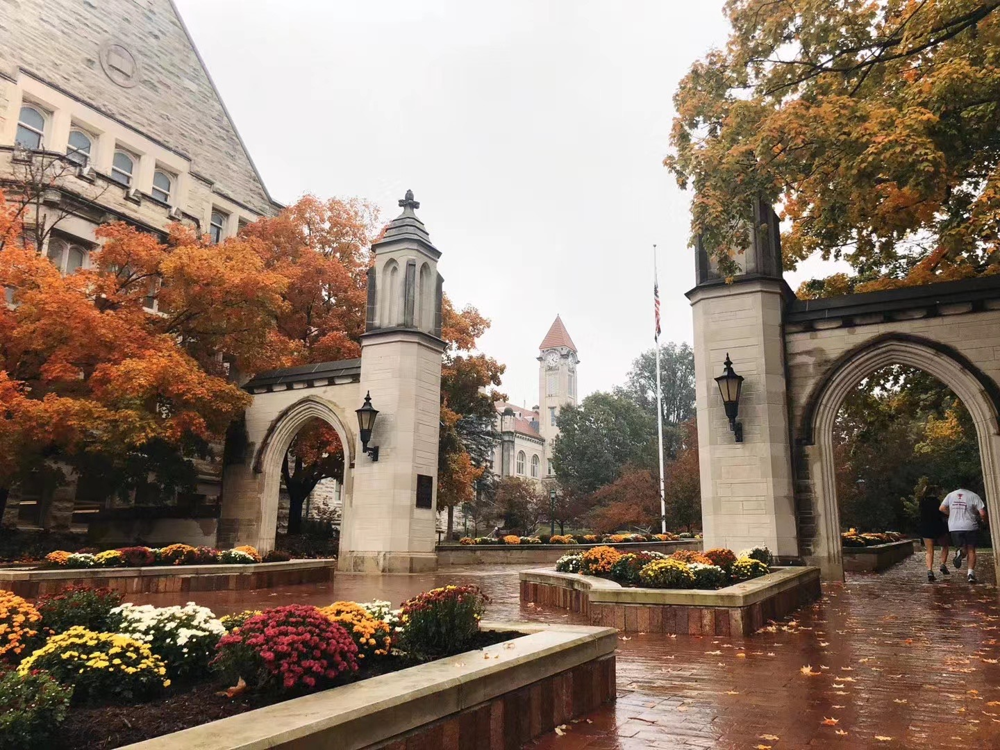
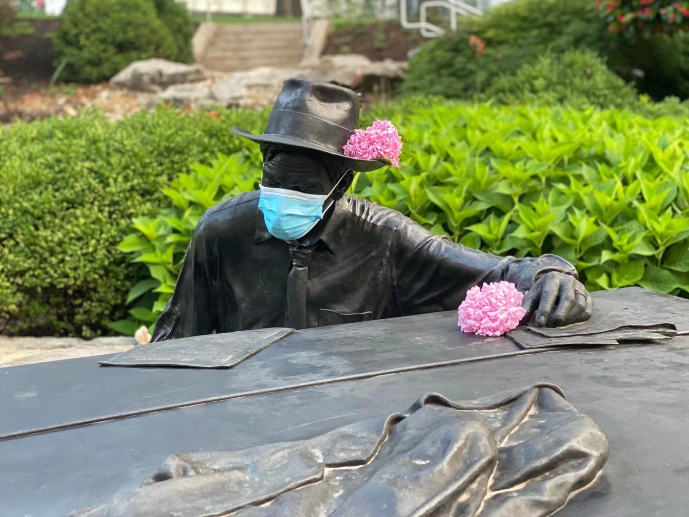

Hi! Welcome to my website
My name is Wenjie Wu
I am a first-year student who is pursuing Master of Science in Information at the University of Michigan. I graduated from Indiana University Kelley School of Business at 2020, majored in Finance, Information System, and Business Analytics. I can speak English, Chinese, and Japanese. If you want to know more about me, feel free to visit my LinkedIn or Email me if you want.
Click the button below to download my resume in English and Chinese.
 


